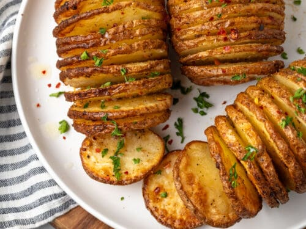

Back to Home
Potatoes with Rosemary and Sea Salt

Description
Potatoes and Rosemary is a pairing that brings out the best in each other while maintaining their individual distinct flavours. It is a perfect accompaniment to grilled meat or fish and salad. You can easily increase the quantities of this recipe to feed a crowd - it really depends on the size of your biggest baking dish and size of your oven!
Ingredients
- 8 medium sized red-skinned potatoes
- 1 tablespoon of good olive oil
- Sea Salt and freshly ground black pepper
- 4 sprigs of fresh rosemary
Steps
- Preheat oven to 180 C
- Using a mandolin slice the potatoes very thinly
- Place in a medium sized glass bowl and cover with cold water.Let sit for about 20 minutes then drain and dry with towel
- Pick the leaves off the rosemary and place in the base of a 20 cm round or 18 cm square dish
- Stack the potatoe slices in the dish tightly.Note:Potatoes will shrink a little as they cook.
- Drizzle with the olive oil and season well with sea salt and black pepper.
- Bake for 45-55 minutes, until the potatoes are golden and crispy around the edges.
- Serve immediately